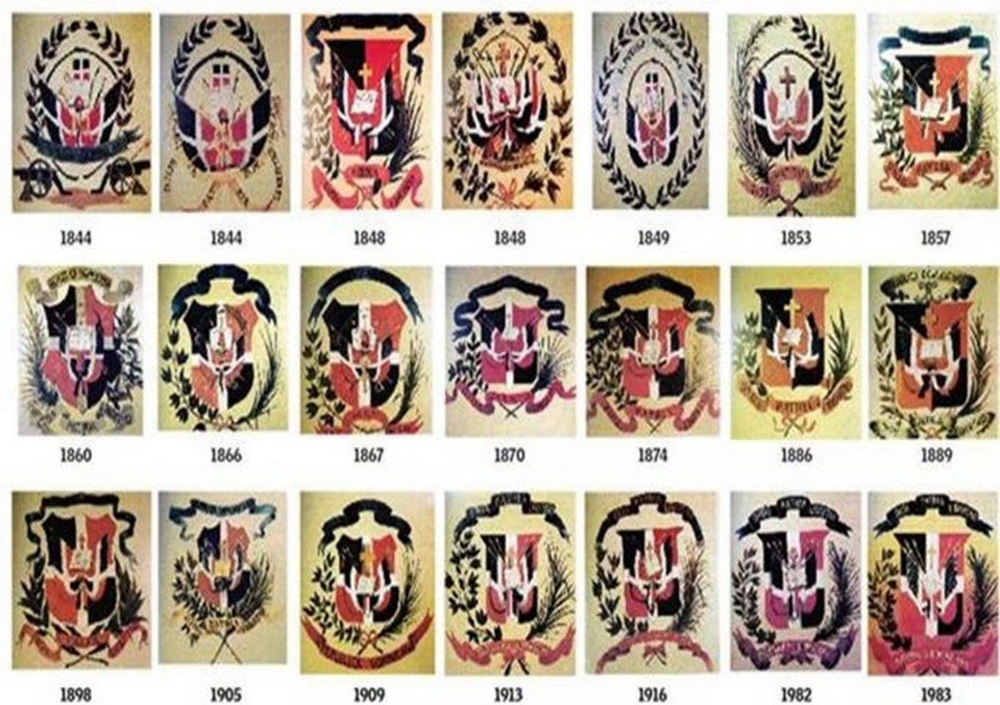

El escudo de armas de la República Dominicana es el emblema heráldico que representa al país y que, junto con la Bandera y el Himno Nacional, tiene la categoría de símbolo patrio.
Creado en la época de la proclamación de independencia nacional, en 1844, la historia registra 21 escudos incluyendo el actual, tras experimentar un largo proceso de modificaciones.
Este tenía dos ramas exteriores de laurel y debajo de éstas, formando un arco, aparecía una serpiente mordiendo y tragando su cola (signo de eterna evolución).
En primer plano, en la parte inferior, había una cinta ancha con las palabras "República Dominicana”. A ambos lados en la parte inferior, dos cañones con sus respectivas balas esféricas en forma piramidal.
En segundo plano habían dos banderas dominicanas y un gorro frigio (símbolo de la libertad) ubicado justo en el cruce de las astas.
En un tercer plano aparecía la Biblia abierta y en el centro; detrás del libro había un trofeo de armas (una lanza y un fusil con bayoneta calada a la derecha, y un sable y una corneta a la izquierda); arriba del libro había una bandera dominicana.
Constituciones, leyes y decretos posteriores fueron modificando la estructura del escudo:
A partir del año 1913 se oficializó una uniformidad heráldica mediante el decreto del 6 de febrero de 1913, expedido por el gobierno de Monseñor Nouel, que establecía la forma actual. En el mismo decreto aparecía un diseño, hecho por Casimiro Nemesio de Moya, reproduciendo el "Gran Sello de la Nación".
Además de la forma, dicho decreto fijó, en su artículo segundo, los colores actuales: azul ultramar y rojo bermellón.
